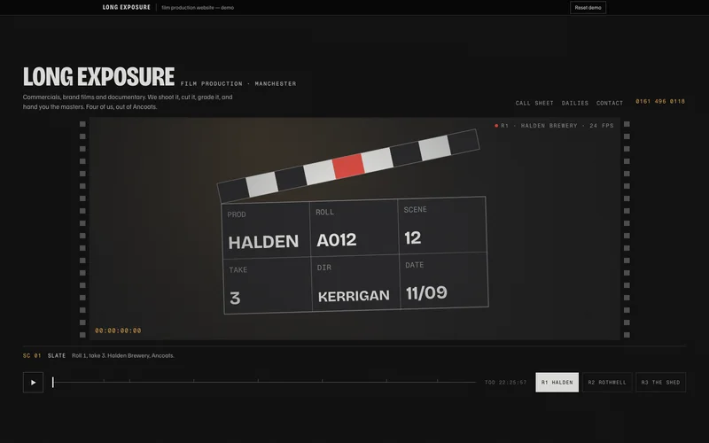

Long Exposure
A film company's site that plays like a film you can scrub. The page opens on a countdown leader and then runs inside a letterboxed gate with a timecode burned into the corner. Scrolling scrubs the cut; pressing play lets it run on its own; three reels swap the whole shot list. Every frame is drawn in code — no video, no images, nothing to buffer.
This is the build itself, not a recording. Use it like a customer would. State is kept in your browser; there is a reset inside.

What does Long Exposure do?
Long Exposure is a working website built for an invented film production company. Film companies tend to put a video embed on a black page and call it a website. This one makes the page itself the film, so it opens instantly on a phone and the work is moving before anything has downloaded.
It sits in the Motion lane: the page is the film: scroll-driven sequences, letterboxes, timecodes, drawn frames.
What is in it
- Countdown leader, letterbox gate and a timecode that keeps running
- Scroll position is the playhead — it works with Reduce Motion on
- Play, pause and a scrub bar with a tick per shot
- Three reels that swap the entire shot list mid-scrub
- Services set out as a real call sheet, dated to next Tuesday
- Draggable dailies strip — pick a frame and the gate cuts to it
- Enquiry form that prints back a formatted call sheet request
- Written
- By hand, as a single self-contained page. No page-builder, no theme, no framework.
- Dependencies
- None at runtime. Fonts load from Google Fonts with system fallbacks; everything else — every drawing, chart and interaction — is in the file.
- Imagery
- No stock. Every visual is drawn in code, SVG or canvas.
- The business
- Long Exposure — invented. Every person, number and review inside is fictional so nothing here exposes a real client.
- Runs on
- Any modern browser, and it is built for phones as much as desktops. State stays in your browser; there is a reset control inside.
- Yours would
- Carry your name, your numbers and your diary, and be owned by you from day one.